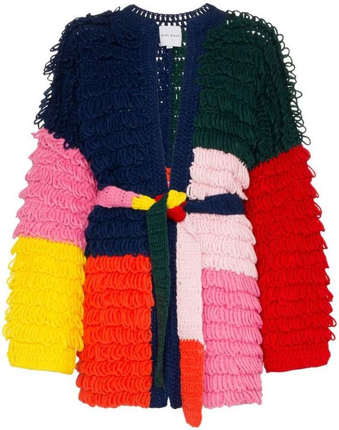
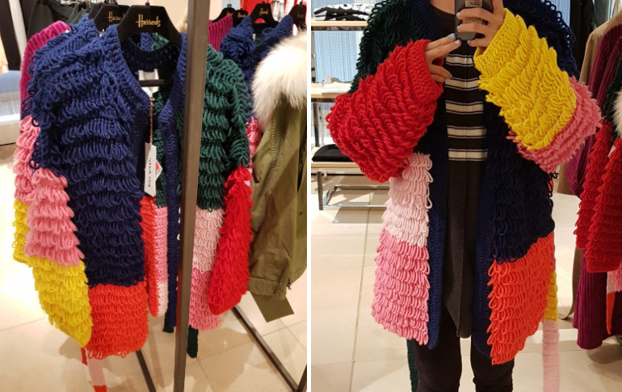
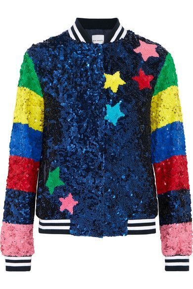
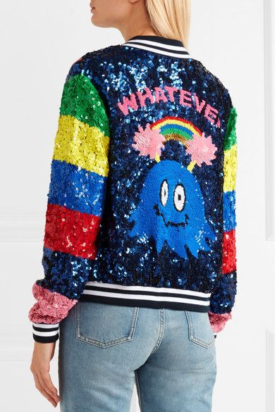
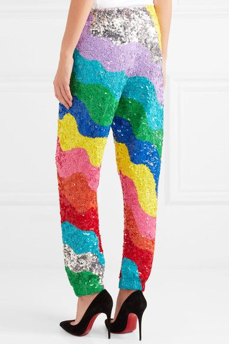

요번에 새로 발견한 브랜드

해롯에서 엄청 세일하는걸 발견하고 입어봤지만
주머니가 없고 / 저 무수한 고리가 어딘가에 걸려 한번쯤 큰일날거 같다...란 생각에
포기하고 돌아왔습니다. 그리고 계속 생각나요 ;ㅂ; 사올걸 ;ㅂ;



검색해보니 이런 미친 디자인의 옷이 많아 제 취향입니다 :D 귀욥다
예전에 미카 내한 갔을때 헐 저런 미친 반짝이 수트는 어디서 구하는거였찌? 싶었는데
이 브랜드였나? ㅋㅋㅋㅋㅋㅋㅋㅋㅋㅋㅋㅋ